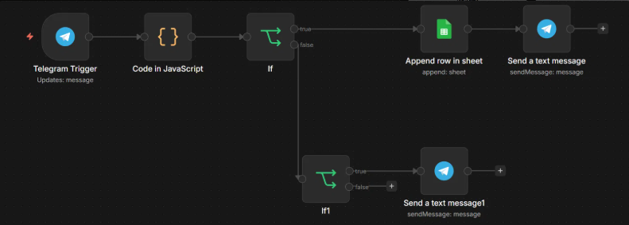
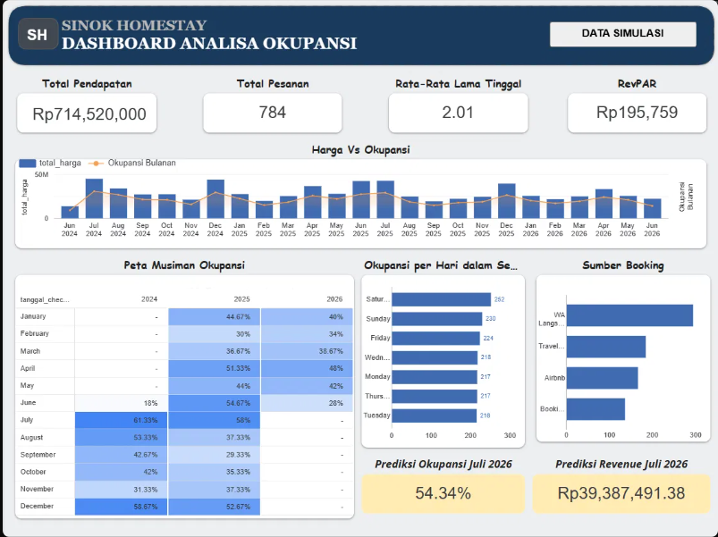
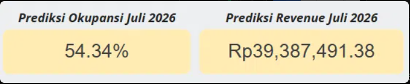
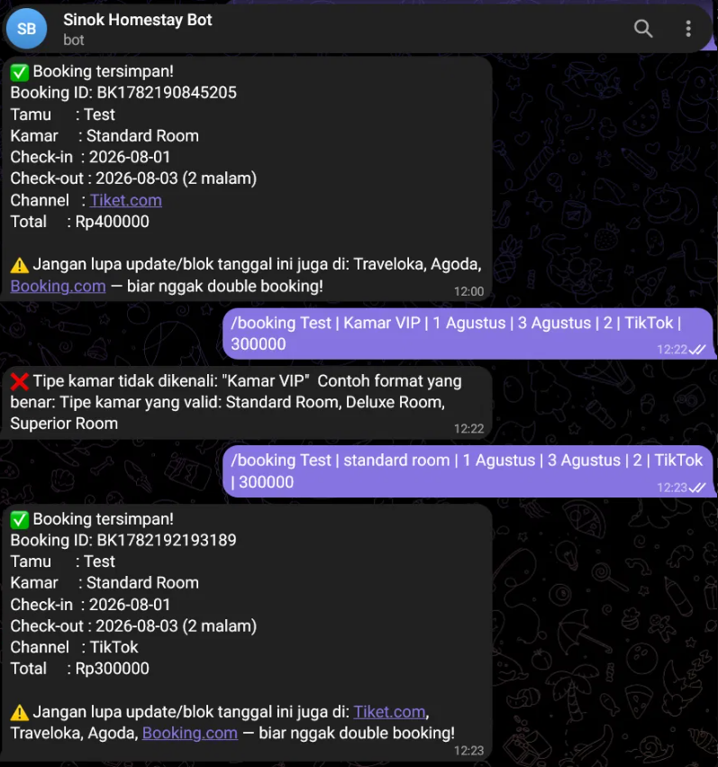

Ringkasan
Sinok Homestay adalah project simulasi sistem data dan otomasi untuk bisnis homestay. Project ini dibuat untuk menjawab masalah umum pada usaha penginapan kecil: data booking masih tersebar di chat, buku catatan, dan beberapa platform OTA, sehingga sulit dipantau secara cepat dan rawan terjadi double booking.
Melalui sistem ini, booking dapat dicatat lewat Telegram Bot, tersimpan otomatis ke Google Sheets, memicu reminder update OTA, lalu divisualisasikan dalam dashboard okupansi dan revenue. Data historis juga digunakan untuk membuat proyeksi okupansi dan pendapatan bulan berikutnya.
Masalah
Banyak usaha homestay memiliki data operasional yang sebenarnya kaya insight, tetapi belum dimanfaatkan karena pencatatan masih manual. Admin sering menerima booking dari berbagai channel seperti Traveloka, Agoda, Booking.com, atau direct order, namun data tersebut tidak selalu tercatat dalam satu sistem yang rapi.
Akibatnya, pemilik sulit mengetahui performa okupansi, channel mana yang paling efektif, kapan periode ramai/sepi, serta berapa potensi revenue bulan berikutnya. Risiko lain yang muncul adalah keterlambatan update ketersediaan kamar di OTA, sehingga peluang double booking menjadi lebih besar.
Solusi
Project ini membangun alur sederhana namun end-to-end: admin cukup memasukkan booking melalui format command di Telegram Bot. Data booking kemudian divalidasi, disimpan ke Google Sheets, dan langsung memicu pesan pengingat agar admin memperbarui ketersediaan kamar di semua OTA.
Data yang terkumpul digunakan untuk membuat dashboard analisis okupansi, revenue, sumber booking, rata-rata lama tinggal, harga per malam, serta tren musiman. Selain itu, sistem juga menghitung proyeksi okupansi dan revenue untuk bulan berikutnya berdasarkan pola historis.
Alur Kerja
Telegram Bot→
n8n Workflow→
Google Sheets→
Dashboard→
Forecast
- Admin mengirim command booking melalui Telegram.
- Bot memvalidasi format input, tipe kamar, tanggal, channel, dan nominal booking.
- Data booking otomatis masuk ke Google Sheets.
- Sistem mengirim reminder agar admin memperbarui ketersediaan kamar di OTA.
- Dashboard membaca data booking untuk menampilkan performa okupansi dan revenue.
- Forecast menghitung estimasi okupansi dan pendapatan bulan berikutnya.
Nilai untuk Bisnis
Visibility
Dashboard mengubah data booking mentah menjadi informasi yang mudah dibaca: tren okupansi, revenue, channel booking, harga, dan pola musiman.
Otomasi
Booking baru bisa dicatat lewat satu baris command chat dan langsung tersimpan ke database, tanpa perlu membuka laptop atau menginput manual berkali-kali.
Foresight
Data historis digunakan untuk memperkirakan okupansi dan revenue bulan berikutnya, sehingga pemilik homestay dapat mengambil keputusan lebih cepat.
Galeri

n8n Automation Workflow

Dashboard Analisa Okupansi

Prediksi Occupancy & Revenue

Telegram Bot Booking Flow
Sorotan
- Booking baru tercatat ke Google Sheets dalam <1 menit via satu baris command chat.
- Setiap booking otomatis memicu reminder ke semua OTA lain seperti Traveloka, Agoda, dan Booking.com.
- Telegram Bot memvalidasi format input, tipe kamar, tanggal, channel, dan membuat Booking ID unik.
- Dashboard interaktif menampilkan harga vs okupansi, peta musiman, sumber booking, okupansi per hari, dan revenue.
- Proyeksi okupansi dan revenue bulan depan dihitung otomatis dari tren historis.
- Diuji pada 784 data transaksi simulasi sepanjang Juni 2024–Juni 2026.
Hasil
<1 mnt
Entry Booking
784
Data Transaksi Simulasi
54.34%
Proyeksi Occ. Jul 2026
Rp39,4 Jt
Proyeksi Revenue Jul 2026
Catatan: data yang digunakan adalah data simulasi untuk kebutuhan pengembangan portofolio.
⚠ Limitasi Teknis
Perhitungan okupansi masih menggunakan pendekatan flat per bulan dan belum sepenuhnya prorata untuk booking lintas bulan. Selain itu, sebagian data uji masih berupa data simulasi.
Pengembangan berikutnya diarahkan pada perhitungan sisa kamar secara real-time, validasi ketersediaan berdasarkan tanggal check-in/check-out, serta forecast yang lebih adaptif terhadap musim liburan dan pola pemesanan mendadak.
Tech Stack
Google Sheetsn8nTelegram Bot APIPythonDashboardAutomationForecastingData CleaningWorkflow Automation
Overview
Sinok Homestay is a simulated data & automation system for a homestay business. It's built to tackle a common problem in small lodging businesses: booking data scattered across chat, notebooks, and several OTA platforms — hard to monitor quickly and prone to double booking.
With this system, bookings are logged via a Telegram Bot, saved automatically to Google Sheets, trigger OTA-update reminders, then get visualized in an occupancy and revenue dashboard. Historical data also feeds next-month occupancy and revenue projections.
Problem
Many homestay businesses hold operational data that's genuinely rich in insight, but leave it unused because record-keeping is still manual. Admins receive bookings from many channels — Traveloka, Agoda, Booking.com, or direct orders — yet that data isn't always captured in one tidy system.
As a result, owners struggle to know occupancy performance, which channel is most effective, when the busy/quiet periods fall, and how much revenue next month could bring. Another risk: delayed room-availability updates on OTAs, which raises the chance of double booking.
Solution
This project builds a simple but end-to-end flow: the admin just enters a booking through a command format in the Telegram Bot. The booking is then validated, saved to Google Sheets, and immediately triggers a reminder message for the admin to update room availability across all OTAs.
The collected data powers an analysis dashboard for occupancy, revenue, booking source, average length of stay, price per night, and seasonal trends. The system also computes next-month occupancy and revenue projections from historical patterns.
Workflow
Telegram Bot→
n8n Workflow→
Google Sheets→
Dashboard→
Forecast
- Admin sends a booking command via Telegram.
- Bot validates input format, room type, dates, channel, and booking amount.
- Booking data flows automatically into Google Sheets.
- System sends a reminder for the admin to update room availability on OTAs.
- Dashboard reads the booking data to show occupancy and revenue performance.
- Forecast estimates next-month occupancy and revenue.
Value Proposition
Visibility
The dashboard turns raw booking data into easy-to-read information: occupancy trends, revenue, booking channels, pricing, and seasonal patterns.
Automation
A new booking can be logged with a single chat command and saved straight to the database — no need to open a laptop or re-enter data manually.
Foresight
Historical data is used to estimate next-month occupancy and revenue, so the homestay owner can make decisions faster.
Gallery
n8n Automation Workflow
Occupancy Analysis Dashboard
Occupancy & Revenue Forecast
Telegram Bot Booking Flow
Highlights
- A new booking is recorded to Google Sheets in <1 minute via a single chat command.
- Every booking automatically triggers reminders to update all other OTAs like Traveloka, Agoda, and Booking.com.
- The Telegram Bot validates input format, room type, dates, channel, and generates a unique Booking ID.
- Interactive dashboard shows price vs occupancy, a seasonal map, booking source, daily occupancy, and revenue.
- Next-month occupancy and revenue projections are computed automatically from historical trends.
- Tested on 784 simulated transaction records spanning June 2024–June 2026.
Results
<1 min
Booking Entry
784
Simulated Transactions
54.34%
Projected Occ. Jul 2026
Rp39.4M
Projected Revenue Jul 2026
Note: the data used is simulated data for portfolio-development purposes.
⚠ Technical Limitations
Occupancy is still computed with a flat per-month approach and isn't yet fully prorated for cross-month bookings. Some test data is also still simulated.
Next development steps aim at real-time remaining-room computation, availability validation based on check-in/check-out dates, and a forecast that adapts better to holiday seasons and last-minute booking patterns.
Tech Stack
Google Sheetsn8nTelegram Bot APIPythonDashboardAutomationForecastingData CleaningWorkflow Automation